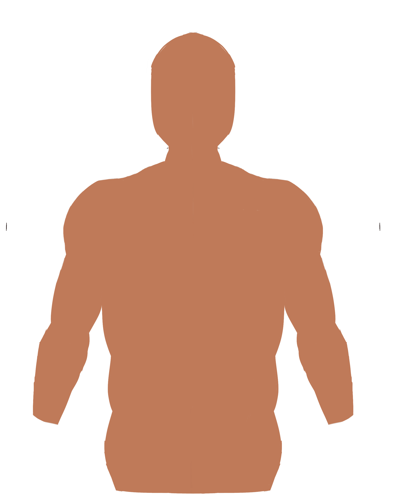

Lungs


Normal Sliding Lung

Absent Sliding Lung

Probe Control
With the probe in the patient's anterior chest, fan the probe back and forth, viewing the lungs and looking for the sliding lung sign, which represents the visceral pleura moving without resistance.